記念日ディナーは２日遅れで☆ [梅吉]
先日26日のうちの子記念日。
梅吉に喜んでもらおうと煮干しを買ってきました。
ペットショップに行って国産、無添加、無着色という
グラム換算すると結構なお値段の煮干しをゲット！
梅吉には「夜に良いことあるよ」って耳打ちしておきました＾＾
うれしい煮干し祭りの予感〜♪
 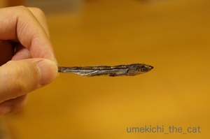
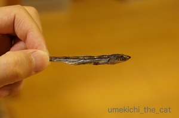

初めて食べる煮干し、食いつきは良い様です(≧▽≦)

お口に入れてぶるるるるるんっ！
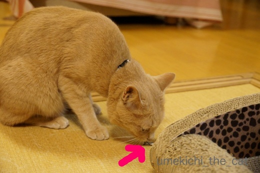
あ、口から出しましたΣ(ﾟ◇ﾟ；)

そのお顔は何を意味してますか・・・
「コレジャナイ」の顔に見えるのはなぜかしら。
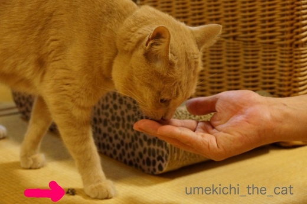
そんなのは気のせい、気のせいに違いない。
さっきあげたのは頭部分だったから今ひとつだったのよね？
気を取り直して今度は胴体部分いきましょう！

![[猫]](https://blog.ss-blog.jp/_images_e/101.gif) せやから 「これじゃない」 いうてるやん
せやから 「これじゃない」 いうてるやん
えええええーーーーー！！！！！
梅吉、煮干しを食べません（涙）
口には入れるのですが出す、入れる出すの繰り返し。
どうにも止まらない煮干し祭りを想像していたのに・・・・・
(꒦ິ⌑꒦ີ)
２日後☆
おとーさんとおかーさんは「高島屋」まで行って高級お刺身を買ってきましたよ。


お口が大きく開いてます！
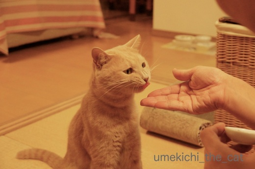
これやっ！まぐろ、うまい！！
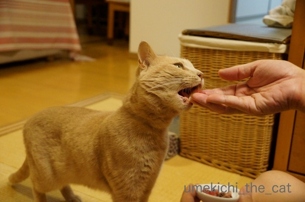
こんどは かつおやな！
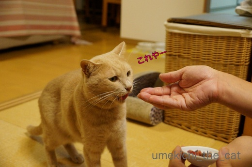
これやー！！
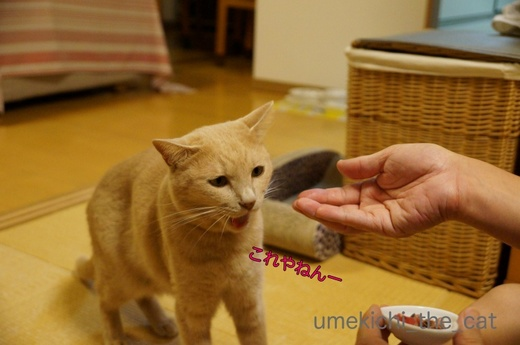
やっと しゅやくのわしに ええことあったー！！！
ちなみに梅吉はまぐろよりかつお派ですw
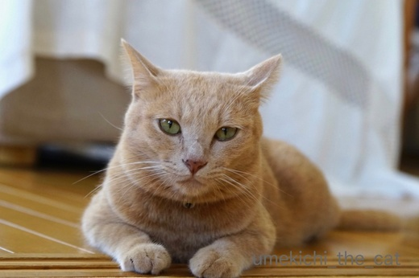
やっとええことあったで おかーさんうそつきや おもうとこやった
梅吉が食べない煮干しはプライパンで乾煎りしてちょっとお醤油を垂らして
お酒のアテにしようと思ってますwww
猫様のお下がりをいただく、ああ、下僕・・・・・
 ↑ガブッと一押し↑
↑ガブッと一押し↑
梅吉に喜んでもらおうと煮干しを買ってきました。
ペットショップに行って国産、無添加、無着色という
グラム換算すると結構なお値段の煮干しをゲット！
梅吉には「夜に良いことあるよ」って耳打ちしておきました＾＾
うれしい煮干し祭りの予感〜♪
 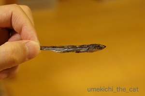
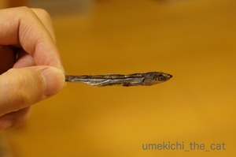
初めて食べる煮干し、食いつきは良い様です(≧▽≦)

お口に入れてぶるるるるるんっ！
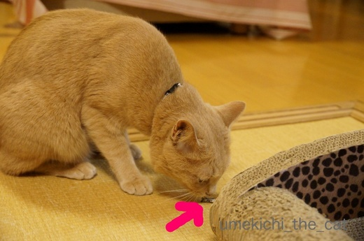
あ、口から出しましたΣ(ﾟ◇ﾟ；)

そのお顔は何を意味してますか・・・
「コレジャナイ」の顔に見えるのはなぜかしら。
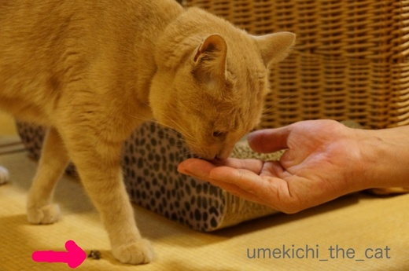
そんなのは気のせい、気のせいに違いない。
さっきあげたのは頭部分だったから今ひとつだったのよね？
気を取り直して今度は胴体部分いきましょう！

えええええーーーーー！！！！！
梅吉、煮干しを食べません（涙）
口には入れるのですが出す、入れる出すの繰り返し。
どうにも止まらない煮干し祭りを想像していたのに・・・・・
(꒦ິ⌑꒦ີ)
２日後☆
おとーさんとおかーさんは「高島屋」まで行って高級お刺身を買ってきましたよ。


お口が大きく開いてます！
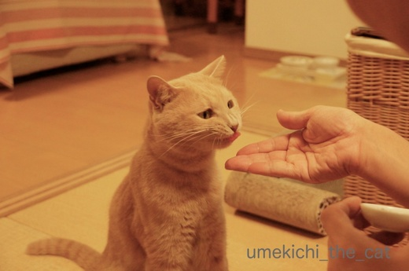
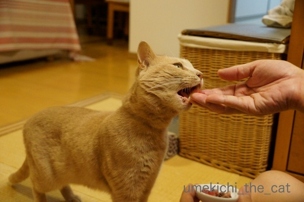
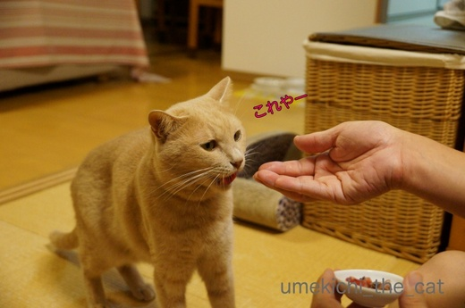
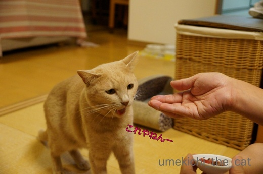
ちなみに梅吉はまぐろよりかつお派ですw
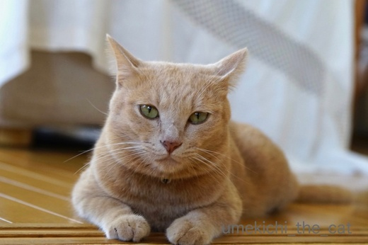
梅吉が食べない煮干しはプライパンで乾煎りしてちょっとお醤油を垂らして
お酒のアテにしようと思ってますwww
猫様のお下がりをいただく、ああ、下僕・・・・・
３回目のうちの子記念日＆ブログ２周年 [梅吉]
今日、7月26日は梅吉の３回目のうちの子記念日です![[ぴかぴか（新しい）]](https://blog.ss-blog.jp/_images_e/150.gif)

ブログ初公開画像！！
梅吉の里親募集の記事写真です。
一時預かりのお宅で撮られた梅吉の小太郎くん時代の写真＾＾
あどけないというか、なんだか困ったような顔。
募集記事のコメントにも
「いつも困ったような顔してます。困ってませんけど。」と書いてありましたよ ( ´艸｀)

保護してくれたNPO法人のスタッフの方に連れられて我が家にやってきた梅吉は
特に緊張するわけでも不安そうにするわけでもなく
用意したささみご飯をぱくぱく食べてトイレを上手に使っておしっこ。
数時間後にはおっとのお膝で寝始めましたよ・・・・
なんて物怖じしない子 (・o・)
物怖じしない子は日々パワーを増して我が家に来て３日目ですでにこの状態。
（12秒です）
（10秒です）
・・・・・・・(^▽^;)
子猫は久しぶりだったし、先代猫は子猫の時からとってもおとなしかったので
梅吉のすざまじい子猫パワーは驚愕でした。
（45秒あります。お時間のあるときにでも）
こんなのまだおとなしい方でしたw
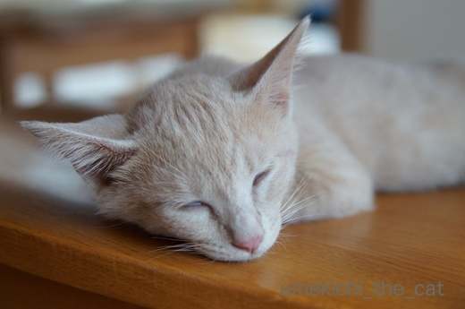
４日目にはうっすら白目に〜Ｏ(≧▽≦)Ｏ
子猫時代の梅吉は高速で家の中を走り回りカーテンをよじ登り
なんにでもガブガブして何事にも興味津々で顔を突っ込み
キッチンで料理するのも大変な苦労をしました。
甘噛みもひどくて正直「キーーーーーーーッ！！！！」となった事もありましたけど
今となっては良い思い出かな＾＾
それに可愛くて面白くて良い子に育ってくれたし！！

口開けちゃって平和な寝顔だねー！
どうかこれからもそのまま、ありのままで元気に過ごしておくれm(_ _)m
↑ガブッと一押し↑

ブログ初公開画像！！
梅吉の里親募集の記事写真です。
一時預かりのお宅で撮られた梅吉の小太郎くん時代の写真＾＾
あどけないというか、なんだか困ったような顔。
募集記事のコメントにも
「いつも困ったような顔してます。困ってませんけど。」と書いてありましたよ ( ´艸｀)

保護してくれたNPO法人のスタッフの方に連れられて我が家にやってきた梅吉は
特に緊張するわけでも不安そうにするわけでもなく
用意したささみご飯をぱくぱく食べてトイレを上手に使っておしっこ。
数時間後にはおっとのお膝で寝始めましたよ・・・・
なんて物怖じしない子 (・o・)
物怖じしない子は日々パワーを増して我が家に来て３日目ですでにこの状態。
（12秒です）
（10秒です）
・・・・・・・(^▽^;)
子猫は久しぶりだったし、先代猫は子猫の時からとってもおとなしかったので
梅吉のすざまじい子猫パワーは驚愕でした。
（45秒あります。お時間のあるときにでも）
こんなのまだおとなしい方でしたw
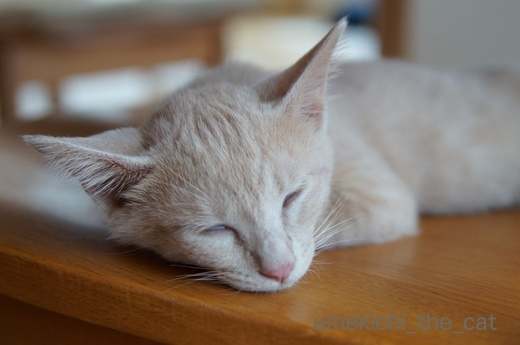
４日目にはうっすら白目に〜Ｏ(≧▽≦)Ｏ
子猫時代の梅吉は高速で家の中を走り回りカーテンをよじ登り
なんにでもガブガブして何事にも興味津々で顔を突っ込み
キッチンで料理するのも大変な苦労をしました。
甘噛みもひどくて正直「キーーーーーーーッ！！！！」となった事もありましたけど
今となっては良い思い出かな＾＾
それに可愛くて面白くて良い子に育ってくれたし！！

口開けちゃって平和な寝顔だねー！
どうかこれからもそのまま、ありのままで元気に過ごしておくれm(_ _)m
梅吉のエコー検査 [梅吉]
週末は梅吉の定期検診でした。
今回は心臓およびお腹のエコー検査が主目的。
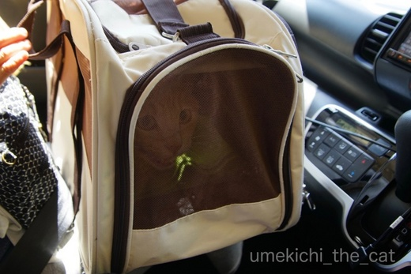
（口ものと緑はレンズの反射かな。エクトプラズム出してるわけじゃありませんw）
この日はあまりにも暑かったので車で病院まで。
（我が家はカーシェア。すぐ近くにステーションがあり『うちの駐車場』と呼ばれていますwww）
歩いて７〜８分の距離なんですが梅吉にも負担だし
何より梅吉を肩掛けキャリーで連れて行くのは結構な重労働。
この暑さじゃニンゲンもバテちゃいますw
梅吉さん久しぶりの車の中でギャン鳴き。
車の音いやなのかな・・・・・

病院の待合室では小さなお友達が出来ましたよ。
写真の上の方、小さな女の子の口元が写っているのがわかるでしょうか。
この日はワンコを連れてきていたのですがおうちにニャンコもいるとのことで
梅吉にも興味津々。
キャリーの蓋を少しだけ開けると優しくなでなでしてくれました。
梅吉も黙ってなでられている・・・
小さい子を怖がるかなと思ったのですけど、驚きです。

小さなお友達はOKでも先生に触られるのはイヤ(⌒_⌒;
でも！恒例のシャーーーーーッは言わなくなりました。ちょっとつまんない(^▽^;)
今後はマイルド路線で行くのでしょうか。

おかーさん もうかえって ええやろか・・・
ダメですよ。このあとエコー検査です。
エコー検査、毛刈りするのかな？と思っていたのですがしなくて良いんですね。
ニンゲンみたいにゼリーをつける必要もなし。
この病院ではアルコールで拭いてOKなんですって。
エコー検査は診察室の扉の向こう処置室のようなところでします。
見たいといえば見せてくれたのかもしませんが病院側もやりにくいでしょう。
第一梅吉が暴れて押さえつけられたりしたら私が居たたまれなくなるし
病院側もバツが悪いだろうし・・・
処置室に消えて行った梅吉の気配に耳をすませていたのですが
怖いくらい何にも聞こえてきません。
先生や助手さんが梅吉をなだめているような声も聞こえてこない・・・
エコーの画像を撮っているらしい「ピッ」という音が時々聞こえてくるくらい。
なんだなんだと思っているうちに梅吉が帰ってきました。

おなか びしょびしょやん![[むかっ（怒り）]](https://blog.ss-blog.jp/_images_e/152.gif)
検査の間びっくりするくらい良い子だったそうです。
先生から盛大に褒められました(〃ω〃)

梅吉のエコー画像です。
前回の受診辺りからやけに温順しく、
今回も黙って検査されて先生は「心臓の働きが悪くて元気がないんとちゃうか・・・」と
密かに心配していたそうなんですが・・・
動きも正常、肥大も無しのとっても健康な心臓だったそうです＾＾
胃、肝臓、腎臓も全く問題なし。
ただ一箇所ちょっと気になるところがあったのですが
日頃の健康状態で判断すると大きな事ではないので様子見となりました。
（そのうち記事にするかもしれません）

診察台の上で帰るー！！と叫ぶw
（体重は4650gでした。きなこちゃん・・・）
今飲んでいるお薬がうまく作用して心臓、肝臓、腎臓は健康であることがわかって一安心。
次回の受診は3ヶ月後の採血になります。
今よりは暑さもおさまっているかな、いやそうであってくれないと困ります。
↑ガブッと一押し↑
今回は心臓およびお腹のエコー検査が主目的。
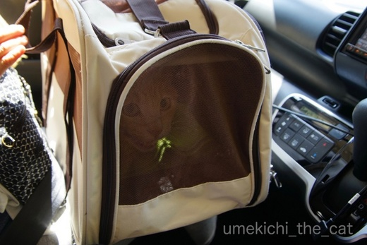
（口ものと緑はレンズの反射かな。エクトプラズム出してるわけじゃありませんw）
この日はあまりにも暑かったので車で病院まで。
（我が家はカーシェア。すぐ近くにステーションがあり『うちの駐車場』と呼ばれていますwww）
歩いて７〜８分の距離なんですが梅吉にも負担だし
何より梅吉を肩掛けキャリーで連れて行くのは結構な重労働。
この暑さじゃニンゲンもバテちゃいますw
梅吉さん久しぶりの車の中でギャン鳴き。
車の音いやなのかな・・・・・

病院の待合室では小さなお友達が出来ましたよ。
写真の上の方、小さな女の子の口元が写っているのがわかるでしょうか。
この日はワンコを連れてきていたのですがおうちにニャンコもいるとのことで
梅吉にも興味津々。
キャリーの蓋を少しだけ開けると優しくなでなでしてくれました。
梅吉も黙ってなでられている・・・
小さい子を怖がるかなと思ったのですけど、驚きです。

小さなお友達はOKでも先生に触られるのはイヤ(⌒_⌒;
でも！恒例のシャーーーーーッは言わなくなりました。ちょっとつまんない(^▽^;)
今後はマイルド路線で行くのでしょうか。

ダメですよ。このあとエコー検査です。
エコー検査、毛刈りするのかな？と思っていたのですがしなくて良いんですね。
ニンゲンみたいにゼリーをつける必要もなし。
この病院ではアルコールで拭いてOKなんですって。
エコー検査は診察室の扉の向こう処置室のようなところでします。
見たいといえば見せてくれたのかもしませんが病院側もやりにくいでしょう。
第一梅吉が暴れて押さえつけられたりしたら私が居たたまれなくなるし
病院側もバツが悪いだろうし・・・
処置室に消えて行った梅吉の気配に耳をすませていたのですが
怖いくらい何にも聞こえてきません。
先生や助手さんが梅吉をなだめているような声も聞こえてこない・・・
エコーの画像を撮っているらしい「ピッ」という音が時々聞こえてくるくらい。
なんだなんだと思っているうちに梅吉が帰ってきました。

検査の間びっくりするくらい良い子だったそうです。
先生から盛大に褒められました(〃ω〃)

梅吉のエコー画像です。
前回の受診辺りからやけに温順しく、
今回も黙って検査されて先生は「心臓の働きが悪くて元気がないんとちゃうか・・・」と
密かに心配していたそうなんですが・・・
動きも正常、肥大も無しのとっても健康な心臓だったそうです＾＾
胃、肝臓、腎臓も全く問題なし。
ただ一箇所ちょっと気になるところがあったのですが
日頃の健康状態で判断すると大きな事ではないので様子見となりました。
（そのうち記事にするかもしれません）

診察台の上で帰るー！！と叫ぶw
（体重は4650gでした。きなこちゃん・・・）
今飲んでいるお薬がうまく作用して心臓、肝臓、腎臓は健康であることがわかって一安心。
次回の受診は3ヶ月後の採血になります。
今よりは暑さもおさまっているかな、いやそうであってくれないと困ります。
梅吉のガブおもてなし [梅吉]
昨日はくつしたにゃんさんが我が家に遊びに来てくれました＾＾
くつしたにゃんさんとはリュカさんを通じてお友達に。
我が家にいらっしゃるのは2回目です。
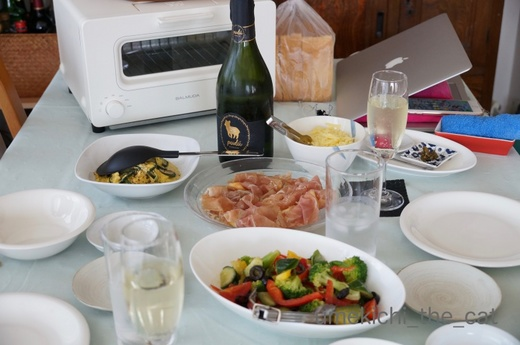
バルミューダでチーズトースト祭り！
もちろん昼飲みしますよ！！

梅吉さんも興味津々です（パンとチーズ大好き。あげませんけどw）
くつしたにゃんさんとは同じ年の生まれ。しかも！同じ誕生日であることが判明(・o・)
こんな偶然ってあるのですね・・・

梅吉さんはお土産をもらってたくさん遊んでもらいましたよ。
おかーさんとはしたことなかった遊び。
シンクの下から覗き込まれて〜
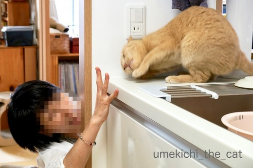


左ストレート決まりましたw
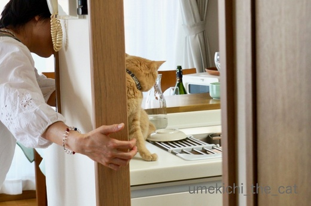
壁を有効利用して遊んでくれます。やっぱり猫飼っている人は遊び方が上手だなぁーＯ(≧▽≦)Ｏ
ちゃんと猫のツボを心得ておいでです＾＾
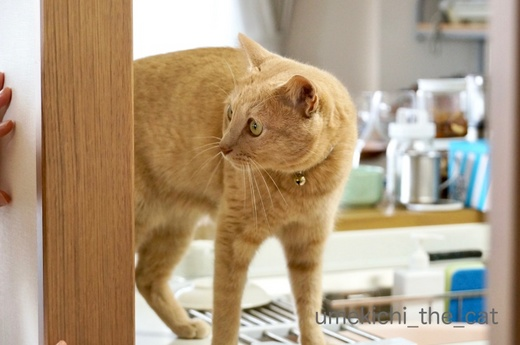
後ろから前からどっちから攻撃されるかわからないので身構える梅吉さん。

おもてなしのガブも決まりました(*>艸<)
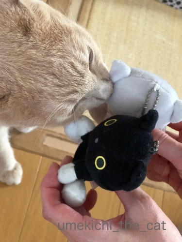
くつしたにゃんさん宅の分身ちゃんずにもご挨拶できましたよー＾＾
めちゃ鼻くっつけてますwww

くつしたにゃんさんはこの本を届けがてら遊びに来てくれたのです。
この本は熊本地震を経験された獣医さんの実体験が元になっています。
よーく読まなくっちゃ！！
遊びに来てくれてありがとう＾＾
今度は玉子コロッケ（一緒に食べようと思ったのにお店が休みだった(꒦ິ⌑꒦ີ) ）
食べに来てねーヾ(*ΦωΦ)ﾉ
ベランダ夏仕様 [梅吉]
梅吉さんが穴のあくほど見つめているのは


ベランダで作業するおとーさん。
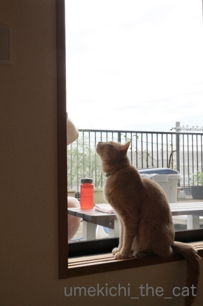
あ、梅吉さんは現場監督ですか？(*>艸<)
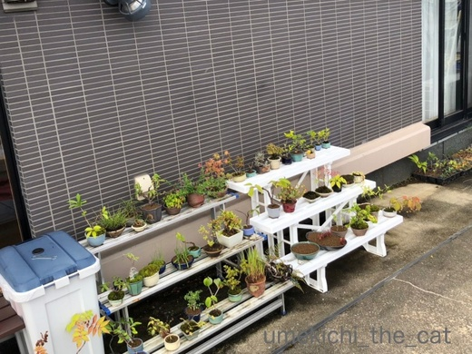
ベランダ、おっとの心の憩（笑）盆栽コーナー。
（今時期盆栽くんたちは暑さにやられてぐったりしてます。）
このベランダは北向きなんですが周りに高い建物がないので
朝は東から午後は西からキョーレツな日差しが照りつけます。
その日差しから盆栽くんたちを少しでも遮るため
おっとと梅吉は（笑）シェードを設置していたのです。
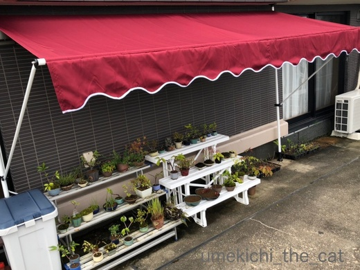
で、こうなりました！
縁のヒラヒラがちょっと我が家テイストではないのですがまあOK^^
巻き上げ式なので風の強い日などはシェードを収納出来ます。
色はすぐ褪せて馴染んだ感じになるでしょう。
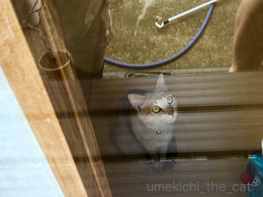
まだ見てますw
(いろんな足が写り込んでますが気にせんといてw）
一通り作業も終わったし梅吉さんにベランダから最終チェックをしていただきましょう！
傘好きなのでこのシェードの下にも入ってくれるかな？
いかがでしょうか？梅吉さん？？

・・・・・って興味はそれですか(^▽^;)

ベランダに出た途端シェードには興味を失いダンボールに全力投球w
うっとりしちゃってますよーー！！
季節のご挨拶 [梅吉]
皆様、暑中お見舞い申し上げますm(_ _)m

蒸し蒸しと暑い日が続いていますね。
日常のひと時、梅吉のプール画像で涼を取っていただけると嬉しゅうございます＾＾
ちなみに右端にいるのはあざらし梅吉です(*>艸<)
あの時「水泳選手みたい」とのコメントをいつくかいただいたので満を持しての登場ですよ。
今回はプールの監視員、ライフセーバーということでお願いします＾＾
《座布団三枚の漢》
昨日はすももちゃんが座布団にしがみつく様にくつろいでいらっしゃいましたが
最近の梅吉の主な居場所も座布団の上になっております。

こんな感じででろ〜ん (⌒_⌒;
ところで、梅吉さん、重大なお知らせがありますよ。
我が家の座布団は梅吉さんが乗ってるのが全てです。
なので梅吉さんがどんなに面白いことしても座布団はMAX 三枚です。

なぬっ！
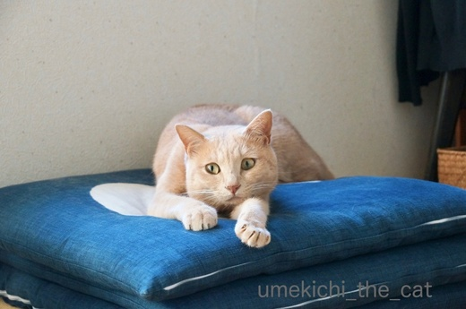
が〜ん![[たらーっ（汗）]](https://blog.ss-blog.jp/_images_e/163.gif) ほんまかいな・・・・・
ほんまかいな・・・・・

やまみたいな ざぶとんにのるん たのしみにしとったのに
皆様に暑中お見舞いをお届けするに当たり、そういえば暑中お見舞いはいつ出すの？
と思い調べてみました。
諸説ある様なので以下に列記。
◉夏の土用から立秋（８月６日）の前日
◉小暑（７月７日）から立秋の前日
◉梅雨明けから立秋の前日
立秋の前日までは同じなのですが送り始めの時期が違っていました。
梅雨明け（東北はまだですが）と小暑は過ぎたので良いかな、と
一筆したためて（違）みましたー＾＾
↑ガブッと一押し↑

蒸し蒸しと暑い日が続いていますね。
日常のひと時、梅吉のプール画像で涼を取っていただけると嬉しゅうございます＾＾
ちなみに右端にいるのはあざらし梅吉です(*>艸<)
あの時「水泳選手みたい」とのコメントをいつくかいただいたので満を持しての登場ですよ。
今回はプールの監視員、ライフセーバーということでお願いします＾＾
《座布団三枚の漢》
昨日はすももちゃんが座布団にしがみつく様にくつろいでいらっしゃいましたが
最近の梅吉の主な居場所も座布団の上になっております。

こんな感じででろ〜ん (⌒_⌒;
ところで、梅吉さん、重大なお知らせがありますよ。
我が家の座布団は梅吉さんが乗ってるのが全てです。
なので梅吉さんがどんなに面白いことしても座布団はMAX 三枚です。

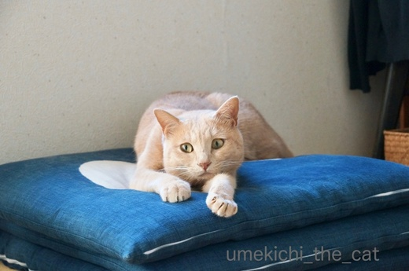

皆様に暑中お見舞いをお届けするに当たり、そういえば暑中お見舞いはいつ出すの？
と思い調べてみました。
諸説ある様なので以下に列記。
◉夏の土用から立秋（８月６日）の前日
◉小暑（７月７日）から立秋の前日
◉梅雨明けから立秋の前日
立秋の前日までは同じなのですが送り始めの時期が違っていました。
梅雨明け（東北はまだですが）と小暑は過ぎたので良いかな、と
一筆したためて（違）みましたー＾＾
肉球シルエット [梅吉]
前線の影響による大雨、大変な被害になってしまいました。
被害に遭われた方にはこころよりお見舞い申し上げます。
今度は台風８号が迫っているとのこと。
これ以上の被害が出ない様祈るばかりです。
大雨が降り始めた６日頃、我が家付近の雨量も相当なものだったので
近くを流れる川の様子をwebカメラで確認しようと府・市のHPをチェックしました。
が、情報が見つからない・・・
おっとが国の管理の河川じゃないの？と言うので国土交通省のHPをチェックすると
川の情報、載ってました。
こういう情報って一括して提供できないものなのでしょうか。
少しでも早く情報を得たい時、あちこち探し回るのって結構なストレスです。
国の管理、府の管理、市の管理・・・川に関しては住民にはあまり関係ないんですけど・・・
まして、大阪は河川がとっても多いのです。
この川はどこの管轄って正しく理解している住民がそんなに多いとも思えません。
なんとかできないのかなぁ。。。
それとも私が知らないだけで一括して情報提供してくれるところ、あるのかしら？
･゜ﾟ･*:.｡..｡.:*･゜ﾟ･*:.｡. .｡.:*･゜ﾟ･*･゜ﾟ･*:.｡..｡.:*･゜ﾟ･*:.｡..｡.:*･゜ﾟ･* ･゜ﾟ･*:.｡..｡.:*･゜ﾟ･*:.｡. .｡.:*･゜ﾟ･*･゜ﾟ
キャットトンネルはもはや梅吉さんの生活必需品となっております。

横穴の使い方はダイブから


一工夫見られる様になりました＾＾

最近はトンネルの中で本気で寝ちゃう様にもなりました。
一度寝てしまうと可愛いお姿が拝見できないので
下僕は時々（いえ、頻繁に、入れ替わり立ち替わり）覗きに行きますw
これは素敵な眺めー(〃▽〃)
この状態をトンネルの外から見ると
肉球のシルエットが！！！

浮かび上がっています！！！きゃ〜〜〜Ｏ(≧▽≦)Ｏ
こういうトンネルの使い方？鑑賞の仕方？？も良いものですね＾＾
トンネルで遊び倒す梅吉さん。
↑ガブッと一押し↑
被害に遭われた方にはこころよりお見舞い申し上げます。
今度は台風８号が迫っているとのこと。
これ以上の被害が出ない様祈るばかりです。
大雨が降り始めた６日頃、我が家付近の雨量も相当なものだったので
近くを流れる川の様子をwebカメラで確認しようと府・市のHPをチェックしました。
が、情報が見つからない・・・
おっとが国の管理の河川じゃないの？と言うので国土交通省のHPをチェックすると
川の情報、載ってました。
こういう情報って一括して提供できないものなのでしょうか。
少しでも早く情報を得たい時、あちこち探し回るのって結構なストレスです。
国の管理、府の管理、市の管理・・・川に関しては住民にはあまり関係ないんですけど・・・
まして、大阪は河川がとっても多いのです。
この川はどこの管轄って正しく理解している住民がそんなに多いとも思えません。
なんとかできないのかなぁ。。。
それとも私が知らないだけで一括して情報提供してくれるところ、あるのかしら？
･゜ﾟ･*:.｡..｡.:*･゜ﾟ･*:.｡. .｡.:*･゜ﾟ･*･゜ﾟ･*:.｡..｡.:*･゜ﾟ･*:.｡..｡.:*･゜ﾟ･* ･゜ﾟ･*:.｡..｡.:*･゜ﾟ･*:.｡. .｡.:*･゜ﾟ･*･゜ﾟ
キャットトンネルはもはや梅吉さんの生活必需品となっております。

横穴の使い方はダイブから


一工夫見られる様になりました＾＾

最近はトンネルの中で本気で寝ちゃう様にもなりました。
一度寝てしまうと可愛いお姿が拝見できないので
下僕は時々（いえ、頻繁に、入れ替わり立ち替わり）覗きに行きますw
これは素敵な眺めー(〃▽〃)
この状態をトンネルの外から見ると
肉球のシルエットが！！！

浮かび上がっています！！！きゃ〜〜〜Ｏ(≧▽≦)Ｏ
こういうトンネルの使い方？鑑賞の仕方？？も良いものですね＾＾
トンネルで遊び倒す梅吉さん。
止まらない被り物愛 [梅吉]
おまけにきょうは あめ ざざぶりや
どなたはんも たいちょうかんり きぃつけてや
さいきん わしな おとーさんが にこにこしながら かえってきたら
ちゅういせなあかんって きづいたんや
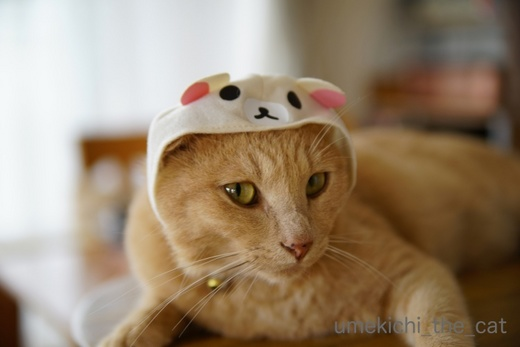
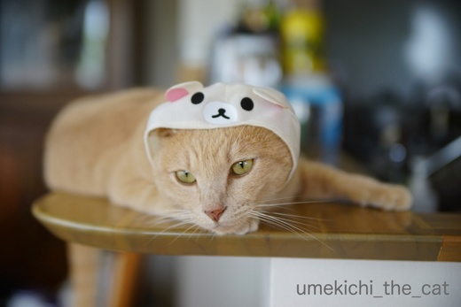
たいがいにしいや ともおもってるんやで
せやけどよのなか ついあってもんがある おかーさんがいうとる
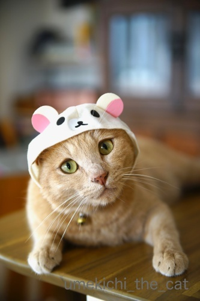
（おかーさんもよろこんでますw）
そんな梅吉さんは

最近鏡をじっと見つめてます( ´艸｀)
気になる猫さんでもいますか？
幼い頃は喧嘩をふっかけていた事もありましたよ。
（11秒 音が出ます！再掲載の動画です＾＾）
止まらないおっとの被り物購入。実はもう一個控えています ( ꒪⌓꒪)
そのうちアップ予定・・・
梅吉、夏越の祓えに行くの巻 [梅吉]
６月30日は夏越の祓え。
今年も近所の神社に立派な茅の輪がたちました。
茅の輪をくぐって半年間の厄落としをして残り半年の無病息災を祈念しますよ＾＾
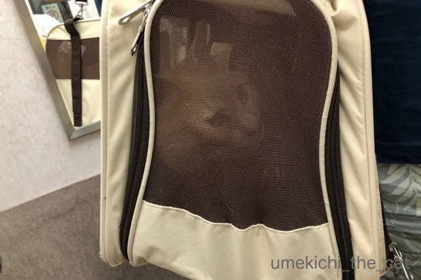
もちろん梅吉さんも一緒です。
キャリーに入って緊張気味。
（4秒です＾＾音量注意！でも音出して見てくださいねw）
病院に行く時でもこんなに絶叫しないのですが・・・(^▽^;)
この日はマンションの配管掃除のため家の外に出ると大きなモーター音がしていたので
それがイヤだったと思われます。
さ、茅の輪をくぐりますよー！
一応くぐり方を書いておきますね。
まず茅の輪の前、中央に立って一礼。
向かって左側の方向へ左足から茅の輪をくぐって左回りで元の中央位置へ。
一礼して今度は向かって右側の方向へ右足からくぐって右回りで元の位置へ。
（ミツバチの八の字ダンスみたいな感じです＾＾）
再度一礼して同じ様に左の方向へ左足からくぐって元の位置に。
最後に一礼して左足から茅の輪をくぐり神殿まで向かってお詣りをします。
茅の輪をくぐっている間は
「水無月の夏越の祓する人は、千歳の命延（の）ぶというなり」
と唱えます。
茅の輪くぐりに行けなかった方、写真の茅の輪で厄落としをされてはいかがでしょうか(^_－)☆
では、私も梅吉さんと一緒にくぐります。
おっとが写真にエフェクトをかけたら茅の輪が神々しく輝いておりますよー。
神々しい茅の輪をくぐり梅吉は新たなフェーズへと突入するのでしょうか！？
今後の半年にご期待ください( ´艸｀)
帰り道、私の呼びかけに答える梅吉さんw
（３秒です＾＾またまた音量注意！！）
ちょっとヤケクソ気味のお返事でしたwww
↑ガブッと一押し↑
今年も近所の神社に立派な茅の輪がたちました。
茅の輪をくぐって半年間の厄落としをして残り半年の無病息災を祈念しますよ＾＾
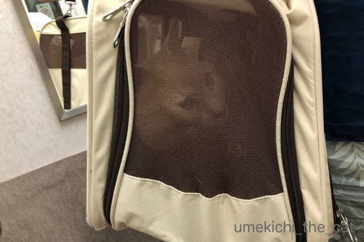
もちろん梅吉さんも一緒です。
キャリーに入って緊張気味。
（4秒です＾＾音量注意！でも音出して見てくださいねw）
病院に行く時でもこんなに絶叫しないのですが・・・(^▽^;)
この日はマンションの配管掃除のため家の外に出ると大きなモーター音がしていたので
それがイヤだったと思われます。
さ、茅の輪をくぐりますよー！
一応くぐり方を書いておきますね。
まず茅の輪の前、中央に立って一礼。
向かって左側の方向へ左足から茅の輪をくぐって左回りで元の中央位置へ。
一礼して今度は向かって右側の方向へ右足からくぐって右回りで元の位置へ。
（ミツバチの八の字ダンスみたいな感じです＾＾）
再度一礼して同じ様に左の方向へ左足からくぐって元の位置に。
最後に一礼して左足から茅の輪をくぐり神殿まで向かってお詣りをします。
茅の輪をくぐっている間は
「水無月の夏越の祓する人は、千歳の命延（の）ぶというなり」
と唱えます。
茅の輪くぐりに行けなかった方、写真の茅の輪で厄落としをされてはいかがでしょうか(^_－)☆
では、私も梅吉さんと一緒にくぐります。
おっとが写真にエフェクトをかけたら茅の輪が神々しく輝いておりますよー。
神々しい茅の輪をくぐり梅吉は新たなフェーズへと突入するのでしょうか！？
今後の半年にご期待ください( ´艸｀)
帰り道、私の呼びかけに答える梅吉さんw
（３秒です＾＾またまた音量注意！！）
ちょっとヤケクソ気味のお返事でしたwww

カフェオレ色の梅吉

梅吉 2023年8月10日 永眠


梅吉と出会った譲渡会

犬猫の理由なき殺処分ゼロ
妄想広告
UMEKICHI 光

爆発的に早い！
時々攻撃的！
Thanks to Mr.Boss365
爆発的に早い！
時々攻撃的！
Thanks to Mr.Boss365